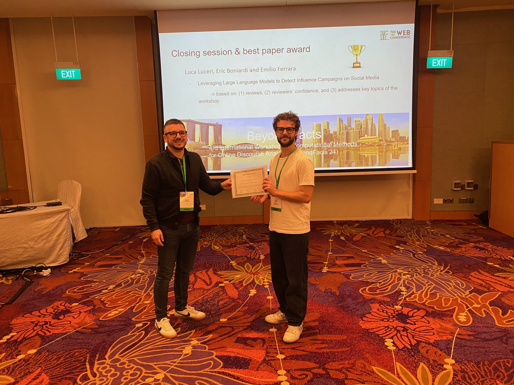
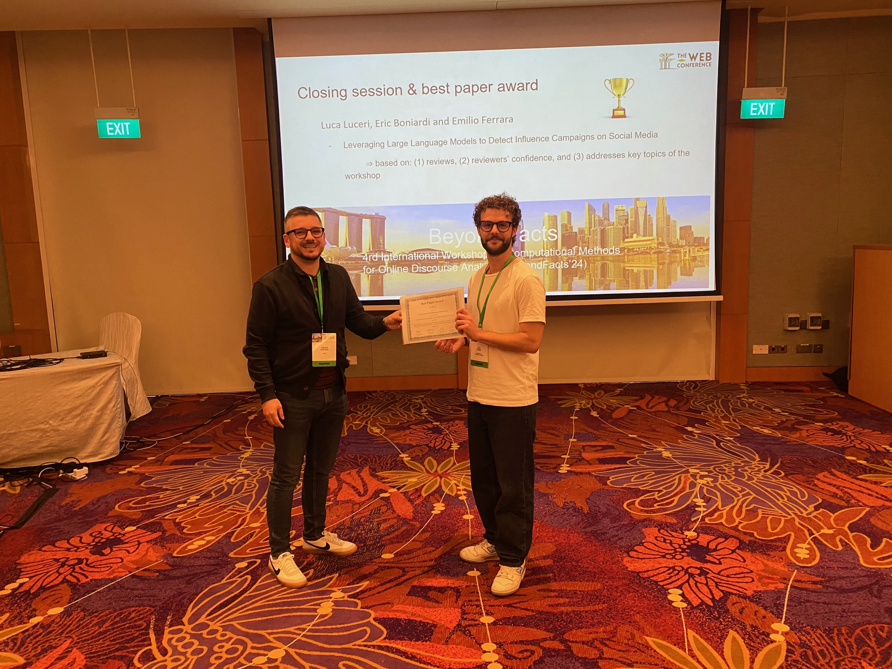
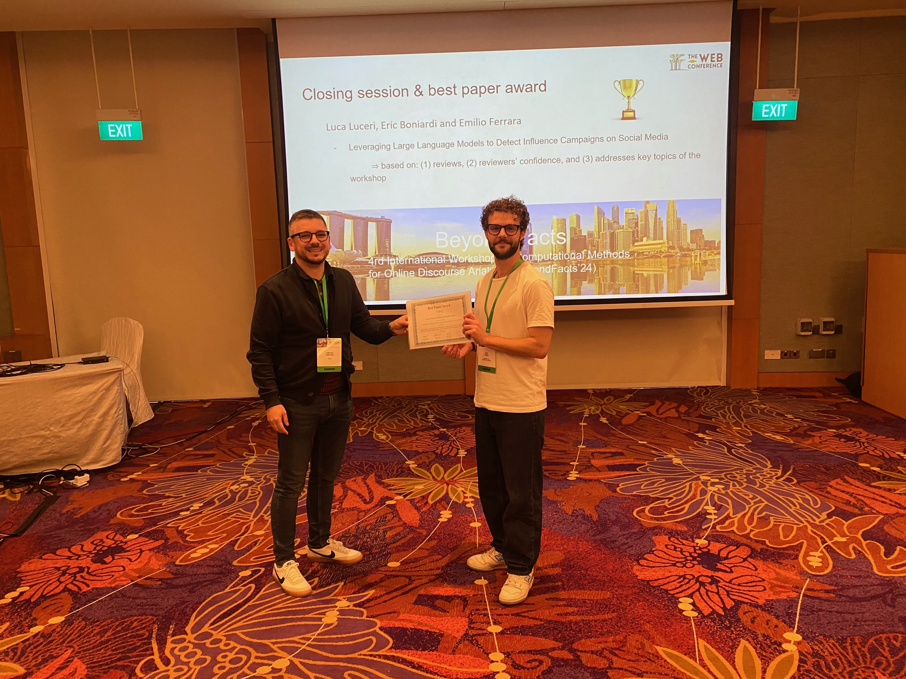

03.06 - 04.06.2024 Spring Meeting
Working group Democracy, DeGEval in cooperation with the project PrEval Zukunfswerkstätten
Talk by Dr.Dimitar Dimitrov - AI methods for detecting and understading scientific/health online discourse
The conference focused on the questions whether AI can support the promotion of democracy and how it can be
used for its evaluation. Main goal of the meeting was to carve out which new possibilities AI offers for
evaluation and democracy while taking the possible risks into account. 13.05 - 17.05.2024: Co-Chairs: Prof. Dr. Stefan Dietze,
Dr.Dimitar Dimitrov, Singapore,
collocated with The Web Conference 2024

 
